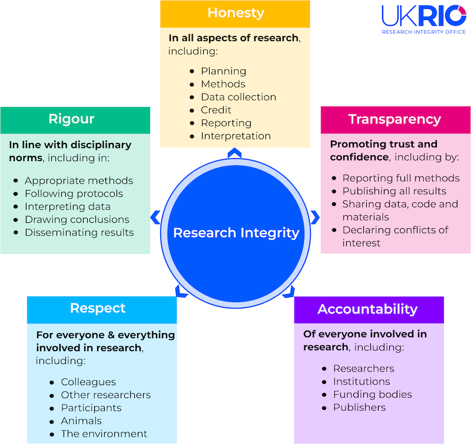

All in One View
Content from Introduction
Last updated on 2026-08-25 | Edit this page
Estimated time: 33 minutes
Overview
Questions
- Why might a paper be retracted?
- How do paper retractions relate to integrity?
- What do we mean by research integrity?
Objectives
- Describe factors contributing to paper retractions
- Describe components of research integrity
- Explain how lack of integrity could lead to a paper retraction
Introducing Alma
Alma has recently joined a new research group as a junior member of the team. They are keen to make a good impression and be a valued contributor to the team. There has been a lot of buzz around the team and in general about AI, and how they may be helpful in the team’s current project. However, Alma isn’t so sure. Alma’s previous research team lost funding after it was found that the lead investigator had been falsifying data, and a number of papers were retracted. They are also aware of papers in high profile journals being found to have “hallucinated” citations, and concerns around wellbeing. Alma needs some help to critically evaluate if this will be an appropriate tool to use in their research process.
Throughout this lesson we will discuss a range of issues that will help Alma, and you, critically evaluate if an AI tool is appropriate to use in your projects.
Risks of retraction
In December 2023 Nature reported that more than 10,000 publications had been retracted during that calendar year alone. Publications can be retracted for a number of reasons. Some are retracted by the authors, others by journal editors. Some publications remain in the public consciousness long after they have been retracted.
An example of this is Wakefield’s 1998 article linking autism to MMR vaccines. This article was retracted by the Lancet in February 2010 after it was found that Dr Wakefield and colleagues were found to have acted unethically and that there were concerns about incorrect findings. It was also later discovered that the study was partially funded by lawyers acting for parents who were involved in lawsuits against vaccine manufacturers. The public health impact of this publication has been a reduction in vaccinations, leading to an increase in measles outbreaks, which can be life threatening.
For details see: Lancet retracts 12-year-old article linking autism to MMR vaccines
In addition, any articles that have been used in the training data sets for large language models will remain permanently embedded in the model. This can result in incorrect or misleading information being presented to users as facts via model output.
Retraction Watch
Retraction Watch is a blog that reports on the retraction of publications from journals and why these have occurred. In addition to the blog posts, there is also the database that stores information about which publications have been retracted, from where and when.
You may want to explore the blog and website, the leaderboards may be of particular interest.
What are the risks?
Which of the following could result in a paper being retracted?
- Hallucinated citations
- Conflict of interest
- Falsified data
- Misleading conclusions
All of these problems could/should require the paper to be retracted.
Research Integrity
Let’s consider these two definitions from the Oxford English Dictionary:
Research: Systematic investigation or inquiry aimed at contributing to knowledge of a theory, topic, etc., by careful consideration, observation, or study of a subject.
(https://doi.org/10.1093/OED/1194777451)
Integrity: Soundness of moral principle; the character of uncorrupted virtue, esp. in relation to truth and fair dealing; uprightness, honesty, sincerity.
(https://doi.org/10.1093/OED/1327125083)
What do these mean with regards to how we undertake research?
Tell Your neighbour: What does research integrity mean to you?
- Spend 2 minutes thinking about what research integrity means to you
- Share your understanding of research integrity with your neighbour
- Was anything different, or unexpected in their understanding?
The UK Research Integrity Office defines research integrity as all of the factors that underpin good research practice and promote trust and confidence in the research process. These are across the entire research process.
Dimensions of research integrity

Honesty
In all aspects of research, including:
- Planning
- Methods
- Data collection
- Credit
- Reporting
- Interpretation
Transparency
Promoting trust and confidence, including by:
- Reporting full methods
- Publishing all results
- Sharing data, code and materials
- Declaring conflicts of interest
Accountability
Of everyone involved in research, including:
- Researchers
- Institutions
- Funding bodies
- Publishers
These five principles sit alongside the four principles defined in The Singapore Statement agreed at the 2010 World Conference on Research Integrity (WCRI):
- Honesty in all aspects of research
- Accountability in the conduct of research
- Professional courtesy and fairness in working with others
- Good stewardship of research on behalf of others
We will explore each of these dimensions with regards to the use of Generative AI.
Integrity and retractions
If we now reconsider Wakefield (1998), there were a number of concerns regarding research integrity.
What were the main concerns?
Do these overlap with retraction scenarios?
Minute Paper: Integrity and retractions
Write for 1 minute on the topic of how a lack of integrity could lead to a paper retraction.
- Papers may be retracted by an author or the journal’s editorial team.
- Integrity concerns may be a factor in retraction.
- There are multiple dimensions to integrity.
Content from Rigour and Transparency
Last updated on 2026-08-25 | Edit this page
Estimated time: 50 minutes
Overview
Questions
- What is open source AI?
- What are the limitation on explainability?
- What do I need to declare about my use of Gen AI when publishing my work?
Objectives
- Awareness of reproducibility concerns re: GenA I outputs
- Awareness of limitations of explainable AI
- Awareness of business models and how these impact behaviours
- Awareness of differing journal requirements, especially declaring use of Generative AI
What is transparency?
The UK Research Integrity Office define Transparency as a means of promoting trust and confidence.
This is demonstrated through:
- reporting full methods,
- publishing all results,
- sharing data, code and materials,
- and declaring conflicts of interest.
This includes acknowledging the use of tools such as emerging technologies, e.g. Generative AI.
“If you don’t pay for it you are the product”
Margaret McCartney, 2018
Open Acccess versus Open Source
There is a wide range of Generative AI and more specifically, Large Language Models that are “free” to use without registering for an account. These often offer very little control over what data is collected during use and re-used for future model training.
Although subscriptions provide a level of control over what data is collected about your use, their is limited information available about how the tool was created. They are often closed source.
How do you know you have used an appropriate method, if you do not know how the tool is deciding what to present to you?
Explainable AI
Explainable AI refers to: the set of processes and methods that allows human users to comprehend and trust the results and output created by machine learning algorithms
Is Open Source AI explainable AI?
For more information about explainable AI see: What is Explainable AI? - Software Engineering Institute, Carnegie Mellon University
Rigour, disciplinary norms and the attention economy
The UK Research Integrity Office state that Rigour is demonstrated by behaviour that is in line with prevailing disciplinary norms and standards, including the use of appropriate methods.
“Attention is a resource — a person has only so much of it.”
Many Generative AI tools are designed to keep the user engaged with the tool. You may have noticed one or more follow-up questions to your initial request.
Challenge: Task review
The question I would like to answer: Is there a statistically significant relationship between population density, GDP per capita and life expectancy?
Watch the video of the interaction with an LLM: https://youtu.be/cecGWV6BpVo
This video does not have any audio
Alternatively, review the chat history: ChatGPT transcript
Answer the questions:
- Was the question answered?
- Where may the question answer of deviated?
- Was there a risk of creating a non-reproducible result?
Generative AI tools may ask follow-up questions which could potentially lead you away from your data analysis aims.
Always ask a model how it has come to a conclusion and share the code it has used to generate the reportes repsonse.
This will enable you to verify the model outputs.
Publishing your research outputs
Research can take many forms. Traditional papers, software papers, software packages, contributions to open source projects or blog posts.
In May 2026, Nature reported on an increase of fake references in Bio-medical science papers. A study audited 2.5 million papers available via the PubMed Central (PMC) Open Access database published between January 2023 and February 2026. 300,000 were found to create fake references.
See: Surge in fake citations uncovered by audit of 2.5 million biomedical-science papers
Do falsified references constitute a breach of research integrity?
Do you think a paper should be retracted for including falsified references?
When submitting to journals or contributing to open source software projects, there will be guidance on how to contribute and increasingly, requirements to declare Generative AI use.
For example, Cambridge University Press require Author’s to declare and clearly explain their use of AI. Authors are also accountable for any use of AI.
The Journal for Open Source Software (JOSS), provides guidance on AI use for both Authors and Reviewers.
Do you agree with the different guidance for authors and reviewers?
Interestingly, the Comprehensive R Archive Network (CRAN) Repository Policy does not mention AI. However, “The ownership of copyright and intellectual property rights of all components of the package must be clear and unambiguous”, and authors are responsbible for ensuring there is no infringement or misrepresentation of copyright or licences.
Check the requirements
Visit the website of a prominent journal in your field.
Does the author guidelines have any information about about AI generated content?
An example is the BERA Journal Author Guidelines.
Is there anything that surprises you?
What are the implications for your work?
Spend 2 minutes thinking about your response.
Take it in turns to share your thoughts with your neighbours.
- It is important to be transparent about where and how Generative AI has been used in your work flow
- There are differences between the Open Source and Open AI definitions
- Some Generative AI tools are designed to encourage engagement with the tool
- Check the rules around Generative AI use for your chosen dissemination channel
Content from Respect and Accountability
Last updated on 2026-08-25 | Edit this page
Estimated time: 60 minutes
Overview
Questions
- Why is there concern about the environmental impacts of GenAI?
- What is a data worker?
- What influences the output from a GenAI tool?
- What are the IP and data protection considerations when using GenAI tools?
Objectives
- Describe key environmental concerns relating to GenAI and machine learning
- State key issues relating to data workers and worker rights
- Describe embedded values in the tools
- Describe current legal and ethical debates relating to GenAI
Introduction
We have explored a number of dimensions of research integrity through this lesson, including rigour and transparency.
In this episode we will consider the dimensions of respect and accountability.
From the UK Research Integrity Office on What is Research Integrity:
Care and respect are expected for everyone and everything involved in the research system, and for the protection of the integrity of the research record. They should be extended to everyone involved in the research process, all participants in research, and for the subjects, users and beneficiaries of research, including humans, animals, the environment and cultural objects. Those engaged with research must also show care and respect for the integrity of the research record.
Accountability is expected of everyone individually and collectively to create a research environment in which diverse individuals and organisations are empowered and enabled to own the research process and be accountable for their contributions to the research record. This includes being accountable to participants involved in research, and a responsibility to hold individuals and organisations to account when behaviour falls short of the standards set by the Concordat.
Respect, accountability and GenAI
- Could we fall afoul of these obligations through using GenAI?
- What do we need to consider?
We will explore a range of key considerations in this episode.
GenAI, machine learning and the environment
Generative AI has a long history although it has only recently gained widespread attention. Building generative AI models involves selecting an appropriate model and algorithm, and training that algorithm on data.
Machine learning, an important subfield of AI, trains algorithms to recognize patterns in data and make predictions or decisions without being explicitly programmed. Computers can learn from experience and improve their performance over time. Machine learning is the foundation of most AI models and tools.
Neither AI nor machine learning are new. Both have been around for decades and both have caused concern about environmental effects of their use during these decades. The key difference between then and now is computing power and scale. Relatively recent advances in computer science have enabled generative AI to become more widespread as mass-market consumer products. Data center buildout has been extremely rapid, increasing the scale in which generative AI is employed. AI data centers require enormous amounts of electricity, water, and land, which strains local resources.
Challenge
Use these resources to help to answer the following questions:
- What are data centres and how sustainable are they?
- Critical Minerals in AI and Digital Technologies
- I Love Generative AI and Hate the Companies Building It
- How has genAI availability as a public service changed the scale of environmental impact, even though powerful models already existed long before?
- Describe three kinds of resources that are strained by demand.
- A powerful model used by a small number of researchers has a very different environmental footprint than the same (or similar) model fielding requests from millions of users daily. Massive new use of genAI is what transformed environmental impact from a small-scale concern into a broader sustainability question. The scale of public use, not the technology itself, drives the sustainability question.
- Electricity, land, and water
Decent work?
All forms of machine learning require human input. This is either in the form of labelling the training data, or increasingly in reviewing and verifying outputs for model correction and future training.
Issues relating to worker exploitation have been well documented, an example is: My Experience as an Amazon Mechanical Turk (MTurk) Worker
Have things gotten better since 2015?
Data workers
Watch: Data Workers Inquiry video
Write a minute paper answering the question: Is there a tension between the issues raised by the Data Workers Inquiry and UN SDG 8?
You may choose to explore the UN SDG and watch the video as a group.
Once learners have had an opportunity to reflect and draft the minute paper, you may want to engage them in a discussion around the question:
Have things gotten better since 2015?
The process of model training
LLM models predict tokens. After receiving an input text, also called ‘prompt’, it essentially predicts the most likely word to follow that text and continues like that up to a certain length.
For example, if you enter the text below in to an LLM, the model continues your text predicting word after word with the Python code:
{python} def convert_miles_to_km(
LLMs develop the models that allow them to predict the next word by identifying patterns in unimaginably large quantities of text. That process is called pre-training.
These pre-trained models come with a series of flaws. They do not necessarily interpret user input as an instruction or question, so the can be more difficult to use. They also are more likely to produce harmful or false outputs.
To mitigate this, pre-training is usually followed by fine tuning. This process modifies pre-trained models, improves the types of outputs they are likely to produce, and lowers the risk of harmful or wrong output.
There are several fine tuning techniques. One is called reinforcement learning, which aims to maximize a chosen measure of task performance (referred to as a reward signal).
Reinforcement learning requires special machine learning models, called reward models, to provide a reward signal. The reward models take in some text and estimate its quality, usually by providing a numerical score. The score then can serve as the reward signal.
There are two common methods to train reward models.
Reinforcement Learning From Human Feedback (RLHF): Human annotators compare two different model-generated responses to a prompt and choose which is better (example https://arxiv.org/abs/2203.02155)
Reinforcement Learning From AI Feedback (RLAIF): Instead of human annotators an LLM is used to rank the responses. Just like human annotators, the LLM is provided with written instructions on how to rate outputs. (example https://arxiv.org/abs/2212.08073)
It is important to note that fine-tuning does not guarantee that a LLM works perfectly - its just is an improvement over the pre-trained model to reduce risks and make it more user friendly.
Challenge
Given what you have learned about the process of model training, explore with your neighbour:
What are possible ways for biased views and value judgements to affect the model algorithm?
Embedded values
The widespread deployment of LLMs has brought to light many concerns about biases embedded within the models. There are several ways how biases can enter into the LLMs we use. Below are a few examples.
Bias in training data
The training data collected from the internet reflect societal biases present in online content, such as gender or racial stereotypes. Similarly, decisions made about which data to collect and how to curate the data, can introduce bias for example by introducing the the over- or under-representation of certain sources.
Bias in reward model / fine tuning
Human feedback in RLHF trained reward models are based on real human judgments which are inevitably shaped by cognitive biases.
RLAIF trained models are generated using prompts with a set of principles like “choose the less harmful response,” and asked to judge pairs of outputs.
Both RLHF or RLAIF trained reward models can exhibit so called length bias, a tendency to favor longer responses by conflating verbosity with quality. The reward model correlates response length with quality (longer = more helpful)
Bias in design decisions
Decisions about the model architecture during model development can impact how biases are represented and amplified. Like all of us, developers have implicit biases, so they may unconsciously make choices that exacerbate existing inequalities or fail to recognize certain biases.
Some architectures may be more prone to certain types of biases due to their structural characteristics or the way they process input data. For example, a model optimized for accuracy might perform better on majority groups while neglecting minority groups.
Open and Closed Source Models
There are three main levels of model ‘openness’.
- Fully open-source models with unrestricted access to code, weights, documentation and training data. Example https://www.apertus-ai.org/
- Models with publicly available weights, which allow for fine-tuning and adaptation but do not disclose training processes or datasets. Example: Mistral and Llama
- Fully closed, proprietary models typically accessible only through APIs or enterprise licenses. Example: GPT-models, Claude, Gemini.
Unfortunately end users are left to deal with these embedded values. Even for fully open source models scrutinizing and adjusting the algorithms is not feasible, unless you are a developer.
The following topics currently use legal examples from the UK and Europe. We hope to expand examples from other areas over time.
Please adjust to add examples from your own context. For example, the US Copyright Office: https://www.copyright.gov/ai/ specifically part 2, a 50 page PDF. Mostly page 41 of the document, then explained in detail in various contexts throughout.
Training data acquisition, was it fair?
Let’s revisit care and respect.
Care and respect are expected for everyone and everything involved in the research system, and for the protection of the integrity of the research record.
There are concerns about how the training data was collected for Generative AI tools, and there have been a number of court cases where creators believe their rights have been infringed:
- Three key AI and copyright cases
- The Higher Regional Court of Munich considered memorization and temporary copies occurred in model training as infringing reproductions of works
Stack Overflow and ChatGPT
Read: Stack Overflow users sabotage their posts after OpenAI deal
- Are the contributors to StackOverflow being respected, why and why not?
- Does training a commercial product count as scientific research?
Using CC-licensed Works for AI Training
The Creative Commons guidance notes that differences in national laws around copyright impact on the use of copyrighted materials in training data, it also notes that it may not be possible to attribute materials other than RAG trained systems.
Generated outputs and copyright infringements
It is important to check that the outputs of a Generative AI tool is not infringing Copyright.
Currently in the UK:
“Where an AI model is used to generate material that reproduces all or a substantial part of a copyright work without permission this may also comprise an infringement of copyright if there is no relevant exception and no licence is in place. This act of infringement occurs at the output stage and may also create infringement through any subsequent dealing. Any action would be taken against the persons responsible for these respective acts, and depending on the circumstances, the user, the provider of the AI system and any person dealing with infringing content after it has been created may all be liable. Enforcement action against such infringement is available as for other infringements of copyright and would usually be pursued by the right holder through the civil courts.”
Source:UK Government: Report on Copyright and Artificial Intelligence
There have been a number of cases where a generative AI tool has either reproduced or been suspected of reproducing copyrighted materials:
Protecting AI generated outputs
In UK law there are existing protections for Computer Generated Works, however, this is not the case in other countries. Section I of the UK Government Report on Copyright and Artificial Intelligence outlines differences between UK law and other jurisdictions.
The EU report Generative AI and Copyright states:
“purely AI-generated outputs—those created automatically by an AI system without substantial human intervention—are not eligible for copyright protection in the EU. Such outputs are considered to fall into the public domain, making them freely available for anyone to use, reproduce, or adapt without seeking permission or providing attribution.”
Implications for International Collaboration and Publication
It is increasingly common that we are collaborating with colleagues in other institutions, and in other countries.
- Given differences in the ability to protect AI generated outputs, are their any implications for collaborations?
- Could these differences cause problems when publishing research software?
A prompt is insufficient to count as original human work, when is the threshold crossed?
Protecting other peoples’ data
We often work with varying types of data files. These may contain various qualitative and quantitative data.
If data files are uploaded to or accessed within an AI enabled environment it is not always clear what these tools are able to read, or where they be storing any uploaded data files.
In the UK, the Data (Use and Access) Act 2025 got Royal Assent on 19 June 2025, as a result there have been a number of updates to Information Commissioner’s Office (ICO) guidance. The ICO states that “the use of AI will involve a type of processing likely to result in a high risk to individuals’ rights and freedoms, and will therefore trigger the legal requirement for you to undertake a DPIA.”
See: Guidance on AI and data protection
Data Privacy Impact Assessments (DPIAs) are a requirement of the General Data Protection Regulation (GDPR), it is recognised by the European Parliament that there is some overlap between the AI Act and GDPR (Interplay between the AI Act and the EU digital legislative framework). The AI Act also requires the completion of a fundamental rights impact assessment when an AI system is deemed high risk. There are eight areas that are considered high risk (Annex III: High-Risk AI Systems Referred to in Article 6(2)), in addition to AI systems that are intended to be used as a safety component of a product.
It is therefore important for us to know what the tools and platforms we are using have access to, and what is being shared. If you are working with commercially sensitive, personal and especially special category data you will want to ensure that you are working in a closed environment that is not transferring data outside of your organisation.
- The current AI boom is resulting in the building of new large scale data centres.
- New large scale data centres are increasing the demands on energy and water supplies.
- Machine learning relies on human workers, there is a history of poor working practices and lack of support for data workers.
- There is a complex landscape around data protection and copyright, you will need to be aware of both your local regulations and those of any international partners you may have.
Content from Implications for Learning
Last updated on 2026-07-10 | Edit this page
Estimated time: 20 minutes
Overview
Questions
- What is a shallow approach to learning?
- What is a deep approach to learning?
- How does the use of GenAI for coding impact learning?
- How can GenAI be used as a tool to support critical coding rather than a shortcut?
Objectives
- Understand the difference between a shallow approach and a deep approach to learning
- Understand how genAI can enhance or hinder skill acquisition
- Relate the implications for using GenAI to the act of learning how to code
Introduction
In this episode we will take a closer look at different approaches to learning and how they relate to using GenAI in research software development.
Inline instructor notes can help inform instructors of timing challenges associated with the lessons. They appear in the “Instructor View”
The Shallow vs Deep Approach to Learning
Consider the following questions:
- How many legs does a spider have?
- How is a spider not an insect?
Shallow learning, also sometimes called surface learning or rote learning, refers to learning activities that are characterized by recalling and rote memorization. The knowledge gained from shallow learning is considered passive and tends to fade away from our memory.
Deep learning refers to learning activities that are characterized by an effort to connect with and understand the material conceptually. The knowledge gained from deep learning is considered active. Analyzing meaning by drawing connections, elaborating on ideas, and linking them to prior knowledge, which leads to long-term retention in memory.
Importantly, slow speed is an inherent characteristic of deep thinking and learning.
Up-skill and De-skill
The notion that thinking cannot be sped up stands in stark contrast to the promise of GenAI to accelerate productivity and make things faster. Having GenAI perform a task for you is often described as cognitive offloading.
In a 2026 study, Anthropic sought to determine whether cognitive offloading can prevent people from growing their coding skills. In a randomized controlled trial the study found that using AI assistance led to a statistically significant decrease in mastery.
A deep learning approach requires you to be aware of how you are thinking and learning. The learning process becomes a meaningful experience in and of itself.
In June 2026 the Norwegian government announced plans to reduce access to AI tools by learners in schools.
From August 2026 these tools would not be available for learners aged 6 to 13yrs, with those aged 14 and 16 only able to use it under direct teacher supervision.
Learners aged 17 to 19yrs will learn to “use AI appropriately” to prepare them for further education and work.
The Norwegian Prime Minister Jonas Gahr Støre said that using AI increases the risk that young children miss important steps in their education:“The most important thing in school is that our children learn to read, write, and do mathematics,”.
AI Engagement Strategies
Over-reliance on AI for coding can prevent researchers from developing essential skills in research software development and data analysis. Without a solid understanding of the code it is impossible to reliably verify whether research results are correct and valid.
The study by Anthropic mentioned above also found that how someone used AI had a great impact on how much information they retained. Coders who used AI assistance not just to produce code but to build comprehension while doing so showed stronger mastery.
Challenge:
What are some strategies to avoid cognitive offloading and instead use AI to strengthen your research computing skills?
Here are some strategies that could help build comprehension.
- Ask follow-up questions
- Request explanations
- Ask for code generation along with explanations of the generated code
- Pose conceptual questions then use improved understanding to complete the task
- Ask for code review
- Use “what if” and “how/why” questions
- Introduce “friction”: Instruct AI to push back, to never provide an answer outright, etc
- Take it slow!
At the Association for Learning Development Conference 2025, a workshop explored how activities could be designed to enable learners to engage critically with AI.
Read the workshop write-up:What is lazy metacognition and what can we do about it?
Your overall goal should always be to focus on your learning. That means to adopt practices that help you keep learning to code and to be able to scrutinize the answers given back by GenAI.
GenAI output often sounds very confident, which can make us inclined to accept it as correct and factual without critically evaluating it. However, it is important to treat AI outputs as suggestions rather than solutions. Also, remember that you as the researcher need to take responsibility for any AI-generated code you use. We will come back to this in the next episode.
- Shallow learning reduces attention span and hampers deep learning that requires focus and critical thinking.
- Deep learning is focused on problem-solving and connecting various sources of new and existing knowledge.
- GenAI carries the danger of the user being content with shallow learning.
- Avoid shallow learning by using GenAI mindfully.
Content from Summary
Last updated on 2026-08-12 | Edit this page
Estimated time: 50 minutes
Overview
Questions
- What have we learned so far?
Objectives
- Review AI concepts learned so far.
What principles have we learned?
Throughout this lesson we have considered the five dimensions of research integrity:
- Honesty
- Transparency
- Accountability
- Respect
- Rigour
and how these intersect with the use of Generative AI tools in the research pipeline and the development of the tools themselves.
Honesty
In all aspects of research, including:
- Planning
- Methods
- Data collection
- Credit
- Reporting
- Interpretation
Transparency
Promoting trust and confidence, including by:
- Reporting full methods
- Publishing all results
- Sharing data, code and materials
- Declaring conflicts of interest
Accountability
Of everyone involved in research, including:
- Researchers
- Institutions
- Funding bodies
- Publishers
These five principles sit alongside the four principles defined in The Singapore Statement agreed at the 2010 World Conference on Research Integrity (WCRI):
- Honesty in all aspects of research
- Accountability in the conduct of research
- Professional courtesy and fairness in working with others
- Good stewardship of research on behalf of others
Concept mapping
Many of the topics introduced are interconnected. Create a concept map of the key themes introduced in this lesson and how they interact.
This could be done either on paper or using Exaclidraw.
Share your drawing with the group. Are there key themes emerging across the different drawings?
Key considerations
In this lesson we have primarily discussed the use of Generative AI with regards to the dimensions of research integrity.
Think: What would you need to consider to make an informed decision about when, where, or if to use GenAI for coding in your project(s)?
Pair: With a neighbour, discuss your key considerations. What was the same, what different.
Share: Feedback to the group on where you agreed, disagreed and why?
- Generative AI tools can be used both as shortcuts to complete a task and to enhance understanding.
- The responsibility of ensuring use outputs of these tools are correct are with the user.
- There are complex ethical, moral and legal debates about how these tools have been trained, are used and the infrastructure required to make them available to users.